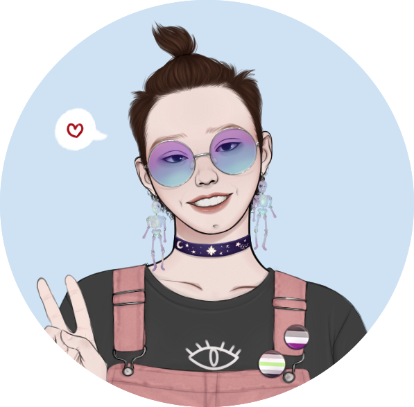

Hey there demons, it's me, ya boi.
I'm a person studying web design and development online.
I enjoy continued education and hope to make a career of web design.
My Skills

Crochet
I am a prolific crocheter. I enjoy crocheting and taught myself how through online tutorials. My favorite things to make are baby hats and clothes.

HTML and CSS
I find front-end web development incredibly fun. I taught myself through Udemy and other sources. I think it's a great way to advance my education.
Get In Touch
Love to create? Me too!
Let's talk about the things that get the creative juices going!
E-mail me and I might e-mail you back!.